# Import libraries
import os
import sys
import subprocess
from pathlib import Path
# Find GRASS Python packages
sys.path.append(
subprocess.check_output(
["grass", "--config", "python_path"],
text=True
).strip()
)
# Import GRASS packages
import grass.script as gs
import grass.jupyter as gj
# Create a temporary folder
import tempfile
temporary = tempfile.TemporaryDirectory()
# Create a project in the temporary directory
gs.create_project(path=temporary.name, name="xy")
# Start GRASS in this project
session = gj.init(Path(temporary.name, "xy"))
# Set region
north = 200
east = 800
south = 0
west = 0
res = 1
gs.run_command("g.region", n=north, e=east, s=south, w=west, res=res)Procedural Noise
tutorial
grass
Learn how to generate procedural noise using Python scripting in GRASS.
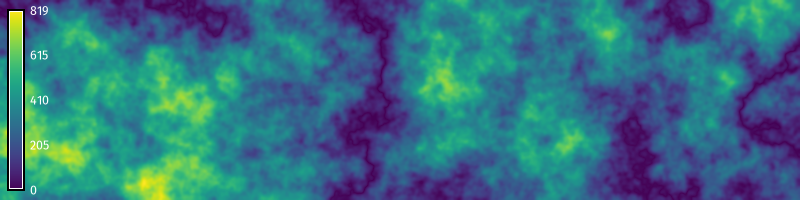
This tutorial is an introduction to generating procedural noise with Python scripting in GRASS. The computer graphics community has developed stochastic functions for procedurally modeling textures. These procedural noise functions are useful for generating synthetic data representing stochastic natural phenomena such as terrain, water, and clouds. Let’s implement procedural noise using map algebra in GRASS! This tutorial covers:
- Random walks
- Gradient noise
- Billow noise
- Ridge noise
- Fractal noise
- Multifractal noise
- Colored noise
NoteComputational notebook
This tutorial can be run as a computational notebook. Learn how to work with notebooks in the tutorial Get started with GRASS & Python in Jupyter Notebooks.
Setup
Start a GRASS session in a new project with a Cartesian (XY) coordinate system. Use g.region to set the extent and resolution of the computational region. Create a region starting at the origin and extending two hundred units north and eight hundred units east.
Random Walks
In a random walk, a walker traverses a space by taking a sequence of steps in random directions. Random walks can used to simulate stochastic processes such as migration, searching, foraging, accumulation, and diffusion. Depending on the number of walkers and steps, 2-dimensional random walks can create sparse or dense stochastic surfaces, which can be useful for generating other forms of procedural noise. In GRASS, 2-dimensional random walks can be generated with the addon r.random.walk. Walkers will traverse the computational region, each stepping cell by cell in a random direction across a raster grid. The output raster records the frequency of visits per cell. First install r.random.walk with g.extension.
gs.run_command("g.extension", extension="r.random.walk")Then run r.random.walk with multiple walkers. Experiment with the parameters. Try varying the number of steps and walkers. If it runs slowly, try increasing the memory or number of processes. The resulting random walk can be used instead of an initial random or fractal surface in the following sections of this tutorial.
# Set parameters
directions = 8
steps = 50000
walkers = 10
memory = 1200
# Generate random walks
gs.run_command(
"r.random.walk",
output="walk",
directions=directions,
steps=steps,
nwalkers=walkers,
memory=memory,
flags="s",
overwrite=True
)
# Set color gradient
gs.run_command("r.colors", map="walk", color="viridis")
# Visualize
m = gj.Map(width=800)
m.d_rast(map="walk")
m.d_legend(raster="walk", color="white", at=(5, 95, 1, 3))
m.show()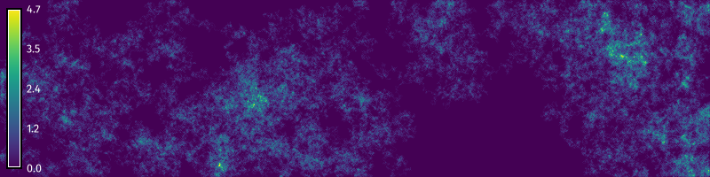
Gradient Noise
The original form of gradient noise - Perlin noise - is generated by interpolating between random gradient vectors on a grid and their offsets [8]. We will use map algebra to generate a generalized form of gradient noise by progressively smoothing a random raster surface. First create a random surface using the raster calculator r.mapcalc. Use formatted string literals to insert variables into raster calculator expressions in Python scripts. Then use a for loop to progressively smooth the random surface using nearest neighbors analysis with r.neighbors. Calculate the average neighborhood using a circular moving window. The key parameters for our gradient noise function are the seed of the pseudo-random number generator, the amplitude of the surface, the iterations of smoothing, and the wavelength of the moving window. Experiment with these parameters. Try setting different values for each of them. Then try using random walks generated with r.random.walk or a fractal surface generated with r.surf.fractal instead of a random surface.
# Set parameters
seed = 0
amplitude = 100.0
iterations = 3
wavelength = 33
# Generate random surface
gs.mapcalc(f"noise = rand({-amplitude}, {amplitude})", seed=seed)
# Generate gradient noise
for i in range(iterations):
# Smooth noise
gs.run_command(
"r.neighbors",
input="noise",
output="noise",
size=wavelength,
method="average",
flags="c",
overwrite=True
)
# Set color gradient
gs.run_command("r.colors", map="noise", color="viridis")
# Visualize
m = gj.Map(width=800)
m.d_rast(map="noise")
m.d_legend(raster="noise", at=(5, 95, 1, 3))
m.show()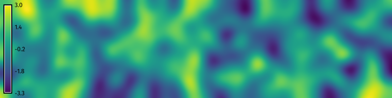
Billow Noise
Billow noise or turbulence is a variation of gradient noise. After generating gradient noise, use the raster map calculator r.mapcalc to take the absolute value of the noise raster. This will transform pits and valleys into peaks and ridges and form new valleys near zero elevation, creating a billowing cloudy effect.
# Set parameters
seed = 0
amplitude = 100.0
iterations = 3
wavelength = 33
# Generate random surface
gs.mapcalc(f"noise = rand(-{amplitude}, {amplitude})", seed=seed)
# Generate perlin noise
for i in range(iterations):
# Smooth noise
gs.run_command(
"r.neighbors",
input="noise",
output="noise",
size=wavelength,
method="average",
flags="c",
overwrite=True
)
# Calculate absolute value
gs.mapcalc("turbulence = abs(noise)")
# Visualize
m = gj.Map(width=800)
m.d_rast(map="turbulence")
m.d_legend(raster="turbulence", color="white", at=(5, 95, 1, 3))
m.show()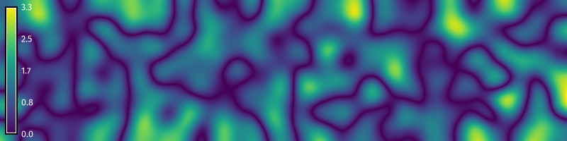
Ridge Noise
Ridge noise is another variation of gradient noise. After generating gradient noise, use the raster map calculator r.mapcalc to subtract the absolute value of the noise raster from an offset and then raise it to an exponent. This will transform the valleys of billow noise into ridges. The key parameters for our ridge noise function are the seed of the pseudo-random number generator, the amplitude of the surface, the iterations of smoothing, the wavelength of the moving window, the offset of the ridges, and the exponent for scaling the ridges.
# Set parameters
seed = 0
amplitude = 100.0
iterations = 3
wavelength = 33
offset = 10
exponent = 2
# Generate random surface
gs.mapcalc(f"noise = rand(-{amplitude}, {amplitude})", seed=seed)
# Generate perlin noise
for i in range(iterations):
# Smooth noise
gs.run_command(
"r.neighbors",
input="noise",
output="noise",
size=wavelength,
method="average",
flags="c",
overwrite=True
)
# Calculate ridge function
gs.mapcalc(f"ridge = exp({offset} - abs(noise), {exponent})")
# Visualize
m = gj.Map(width=800)
m.d_rast(map="ridge")
m.d_legend(raster="ridge", at=(5, 95, 1, 3))
m.show()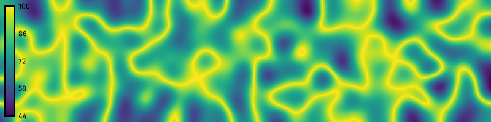
Fractal Noise
Fractional Brownian motion is a random walk through space that is contingent on past steps and has self-similar fractal properties. Fractal noise can be generated from fractional Brownian motion by accumulating octaves, i.e. iterations, of procedural noise with incremental changes in frequency and amplitude [1, 4, 9]. First, use the raster map calculator r.mapcalc to create a constant surface. Then use a for loop to iterate through each octave. For each octave, generate gradient noise, add the gradient noise to the prior surface using r.mapcalc, and then increment the function’s fractal parameters. The key parameters for our fractal Brownian motion function are the seed of the pseudo-random number generator, the amplitude of the surface, the iterations of smoothing, the wavelength of the moving window, the octaves for accumulating noise, the lacunarity or change in frequency of each octave, and the gain in amplitude for each octave.
# import libraries
import random
# Set parameters
seed = 0
amplitude = 100.0
iterations = 3
wavelength = 33
octaves = 6
lacunarity = 0.5
gain = 0.2
# Generate zeros
gs.mapcalc("fbm = 0")
# Generate fractional Brownian motion
for octave in range(octaves):
# Generate random surface
gs.mapcalc(f"noise = rand(-{amplitude}, {amplitude})", seed=seed)
# Generate gradient noise
for i in range(iterations):
# Smooth noise
gs.run_command(
"r.neighbors",
input="noise",
output="noise",
size=wavelength,
method="average",
flags="c",
overwrite=True
)
# Calculate sum of gradient noise maps
gs.mapcalc("fbm = fbm + noise")
# Increment parameters
amplitude = amplitude * gain
wavelength = round(wavelength * lacunarity)
if wavelength % 2 == 0:
wavelength += 1
# Visualize
m = gj.Map(width=800)
m.d_rast(map="fbm")
m.d_legend(raster="fbm", at=(5, 95, 1, 3))
m.show()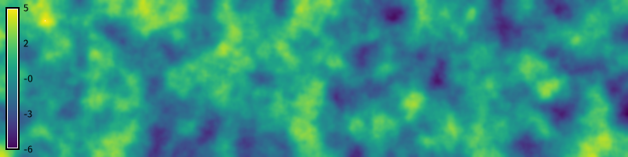
Multifractal noise
Multifractal noise can be generated by more complex incremental accumulations of procedural noise [5, 6]. In this example we will model multifractal Brownian motion by accumulating octaves of turbulent fractal gradient noise. First, use the raster map calculator r.mapcalc to create a constant surface. Then use a for loop to iterate through each octave. For each octave, generate a fractal surface with r.surf.fractal, progressive smooth this surface in a nested for loop to model fractal gradient noise, add the absolute value of fractal gradient noise to the prior surface scaled by amplitude, and then increment the function’s fractal parameters. Experiment with different parameters. Try multiplying fractal maps instead of adding them, but be sure to start with a non-zero constant to avoid multiplication by zero. The key parameters for our multifractal function are the seed of the pseudo-random number generator, the dimension of the fractal surface, the amplitude of the multifractal surface, the iterations of smoothing, the wavelength of the moving window, the octaves for accumulating noise, the lacunarity of each octave, and the gain in amplitude for each octave.
# Set parameters
seed = 0
amplitude = 0.1
iterations = 3
wavelength = 33
octaves = 6
lacunarity = 0.5
gain = 0.05
dimension = 2.2
# Generate zeros
gs.mapcalc("multifractal = 0")
# Generate multifractal surface
for octave in range(octaves):
# Generate fractal surface
gs.run_command(
"r.surf.fractal",
output="fractal",
dimension=dimension,
seed=seed
)
# Generate fractal gradient noise
for i in range(iterations):
# Smooth noise
gs.run_command(
"r.neighbors",
input="fractal",
output="fractal",
size=wavelength,
method="average",
flags="c",
overwrite=True
)
# Calculate sum of fractal maps
gs.mapcalc(f"multifractal = multifractal * {amplitude} + abs(fractal)")
# Increment parameters
dimension = dimension + gain
amplitude = amplitude + gain
wavelength = round(wavelength * lacunarity)
if wavelength % 2 == 0:
wavelength += 1
# Visualize
m = gj.Map(width=800)
m.d_rast(map="multifractal")
m.d_legend(raster="multifractal", color="white", at=(5, 95, 1, 3))
m.show()Colored Noise
In signal processing, noise is described by its color – by the spectral density of the signal. These fractional noises take the form \(1 / f^\alpha\) where \(0 < \alpha < 2\) [3]. White noise has a constant spectral density and sounds indistinct. Examples include the radio and television static. Pink noise \(1 / f\) has a spectral density that is inversely proportional to its frequency and thus has equivalent energy in each octave. This gives pink noise the self similar properties needed for modeling fluctuating phenomena like clouds and terrain. In this example we will generate white noise simply by plotting a standard normal distribution. Then we will generate fractional noise by taking the Fourier transform of white noise, dividing this by frequency \(f^\alpha\), and then taking its inverse Fourier transform. Try different values of \(\alpha\) to generate other shades of colored noise!
First we will plot the waveforms of one-dimensional white and pink noise with the Seaborn data visualization library [10, 11]. To generate one-dimensional white noise, instantiate Numpy’s random number generator numpy.random.default_rng, sample from a standard normal distribution with numpy.random.Generator.standard_normal, and plot with seaborn.lineplot.
# Import libraries
import numpy as np
import seaborn as sns
# Set parameters
seed = 0
n = 512 # number of samples
# Generate white noise
rng = np.random.default_rng(seed)
noise = rng.standard_normal(n)
# Plot waveform
sns.lineplot(data=noise, color=(0.26, 0.004, 0.33))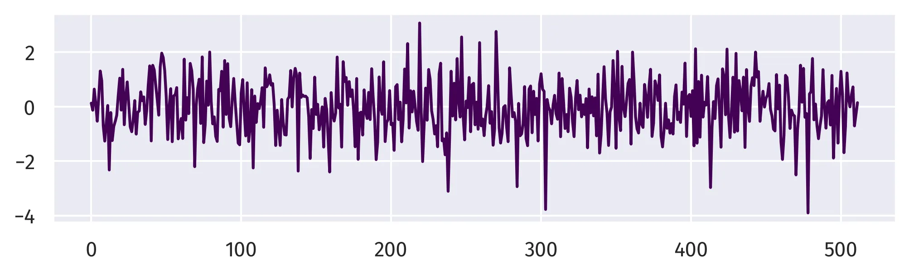
To generate one-dimensional pink noise, first compute the Fast Fourier Transform of the white noise with numpy.fft.rfft, then scale the transformed noise by \(1 / f^\alpha\), compute its inverse Fast Fourier Transform with numpy.fft.irfft, and plot with seaborn.lineplot.
# Set parameters
alpha = 1.0 # where white=0, pink=1, red=1.5, brownian=2
# Generate pink noise
noise = np.fft.rfft(noise, n)
frequency = np.arange(1, noise.shape[-1]+1)
noise /= frequency ** alpha
noise = np.fft.irfft(noise, n)
# Plot waveform
sns.lineplot(data=noise, color=(0.26, 0.004, 0.33))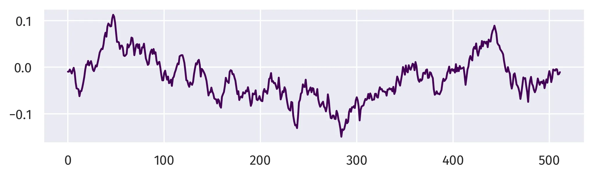
Now we will generate two-dimensional fractional noise using GRASS and NumPy [2, 7]. First, generate a random surface with a normal distribution using r.surf.gauss and convert this raster into an array. Next generate a grid of frequencies. To do this, calculate sample frequencies for each dimension with numpy.fft.fftfreq register them in a grid with numpy.meshgrid, calculate their radial distance from the origin with numpy.hypot and then mask out zeroes to avoid division by zero. Compute the two-dimensional Fast Fourier Transform of the white noise with numpy.fft.fft2. Divide this transformed white noise by the frequency raised to scaling exponent \(\alpha\). For fractional noise with the form \(1 / f^\alpha\), \(\alpha\) is a scaling exponent where zero generates white noise, one generates pink noise, and two generates fractional noise. Compute the two-dimensional inverse Fast Fourier Transform of the noise with numpy.fft.ifft2 and normalize the noise. Now that we have generated fractional noise with NumPy, we can write the array as a raster in GRASS.
# Import libraries
from grass.script import array as garray
import numpy as np
# Set parameters
mean = 0
sigma = 1.0
seed = 0
alpha = 1.5 # where white=0, pink=1, red=1.5, brownian=2
# Generate random surface
gs.run_command(
"r.surf.gauss",
output="noise",
mean=mean,
sigma=sigma,
seed=seed,
overwrite=True
)
# Convert to array
noise = garray.array(mapname="noise")
# Generate frequency
u = np.fft.fftfreq(east)
v = np.fft.fftfreq(north)
u, v = np.meshgrid(u, v)
frequency = np.hypot(u, v)
mask = frequency != 0
frequency[~mask] = 1.0
# Calculate noise
noise = np.fft.fft2(noise)
scaling = frequency ** alpha
noise = noise / scaling
noise = np.fft.ifft2(noise).real
# Normalize
noise = noise / np.linalg.norm(noise)
minima, maxima = np.min(noise), np.max(noise)
noise = (noise - minima) / (maxima - minima)
# Convert to raster
raster = garray.array()
for y in range(raster.shape[0]):
for x in range(raster.shape[1]):
raster[y, x] = noise[y, x]
raster.write(mapname="noise", overwrite=True)
# Set color table
gs.run_command("r.colors", map="noise", color="viridis")
# Visualize
m = gj.Map(width=800)
m.d_rast(map="noise")
m.d_legend(raster="noise", color="white", digits=1, fontsize=10, at=(5, 95, 1, 3))
m.show()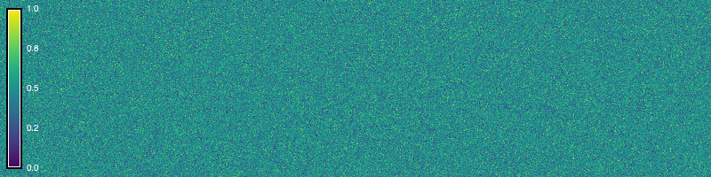
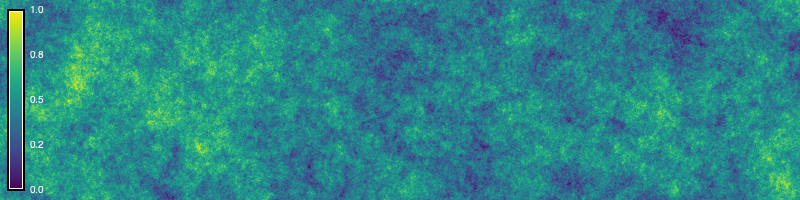
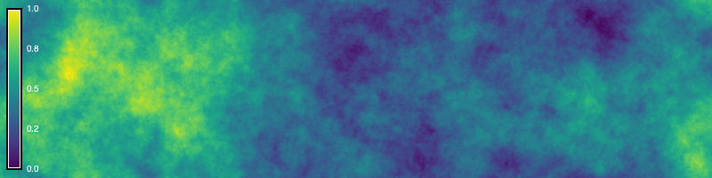
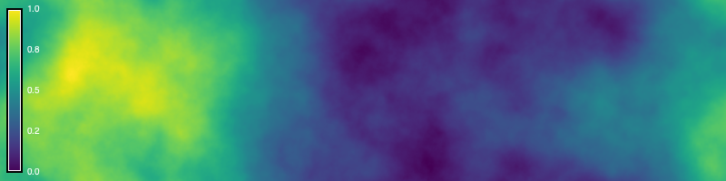
References
[1]
Patricio Gonzalez Vivo and Jen Lowe. 2015. Fractal Brownian Motion. In The Book of Shaders. Retrieved from https://thebookofshaders.com/13/
[2]
Charles R. Harris, K. Jarrod Millman, Stéfan J. van der Walt, Ralf Gommers, Pauli Virtanen, David Cournapeau, Eric Wieser, Julian Taylor, Sebastian Berg, Nathaniel J. Smith, Robert Kern, Matti Picus, Stephan Hoyer, Marten H. van Kerkwijk, Matthew Brett, Allan Haldane, Jaime Fernández del Río, Mark Wiebe, Pearu Peterson, Pierre Gérard-Marchant, Kevin Sheppard, Tyler Reddy, Warren Weckesser, Hameer Abbasi, Christoph Gohlke, and Travis E. Oliphant. 2020. Array programming with NumPy. Nature 585, 7825 (September 2020), 357–362. https://doi.org/10.1038/s41586-020-2649-2
[3]
Benoît B. Mandelbrot and John W. Van Ness. 1968. Fractional brownian motions, fractional noises and applications. SIAM Review 10, 4 (1968), 422–437. Retrieved from http://www.jstor.org/stable/2027184
[4]
Forest Kenton Musgrave. 2003. Procedural fractal terrains. In Texturing and modeling (Third Edition), David S. Ebert, Forest Kenton Musgrave, Darwyn Peachey, Ken Perlin, Steven Worley, William R. Mark and John C. Hart (eds.). Morgan Kaufmann, San Francisco, 489–506. https://doi.org/10.1016/B978-155860848-1/50045-0
[5]
Forest Kenton Musgrave. 2004. Fractal terrains and fractal planets. In The elements of nature: Interactive and realistic techniques, Oliver Deusen, David S. Ebert, Ron Fedkiw, Forest Kenton Musgrave, Przemyslaw Prusinkiewicz, Doug Roble, Jos Stam and Jerry Tessendorf (eds.). Association for Computing Machinery, New York, NY, USA, 7.1–7.45. https://doi.org/10.1145/1103900.1103932
[6]
Forest Kenton Musgrave, Craig E. Kolb, and Robert S. Mace. 1989. The synthesis and rendering of eroded fractal terrains. ACM SIGGRAPH Computer Graphics 23, 3 (July 1989), 41–50. https://doi.org/10.1145/74334.74337
[7]
NumPy Developers. 2023. NumPy. Retrieved from https://numpy.org
[8]
Ken Perlin. 1985. An image synthesizer. ACM SIGGRAPH Computer Graphics 19, 3 (July 1985), 287–296. https://doi.org/10.1145/325165.325247
[9]
Inigo Quilez. 2019. Fractional brownian motion. Retrieved April 26, 2026 from https://iquilezles.org/articles/fbm/
[10]
Michael L. Waskom. 2021. Seaborn: Statistical data visualization. Journal of Open Source Software 6, 60 (2021), 3021. https://doi.org/10.21105/joss.03021
[11]
Michael L. Waskom. 2022. Seaborn: statistical data visualization. Retrieved from https://seaborn.pydata.org